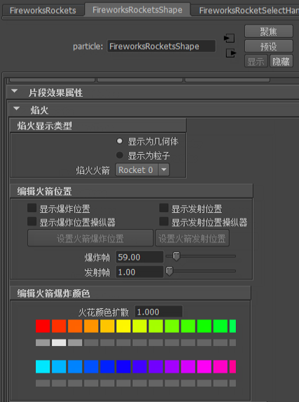

可以使用“焰火”(Fireworks)效果快速轻松地显示焰火。该效果将创建多个向上飞、飞行时留下拖尾以及爆炸的火箭。还为所有粒子创建了重力场。最初，该效果会为火箭发射和爆炸随机选择颜色和位置。您可以稍后编辑这些默认值。在软件（不是硬件）中将焰火渲染为条纹。
创建焰火之前，查看焰火效果中所使用的术语很有帮助。
创建焰火
- 选择 >
 。
。 - 根据需要在选项窗口中设定控制。
对于与创建相关的控制，请参见设定焰火创建控制。
对于您可以稍后编辑的控件，请参见编辑常规的焰火属性。
- 单击选项窗口中的“创建”(Create)或选择。
焰火组和火箭选择控制柄显示。
- 单击播放按钮。
如果您要对焰火属性进行更改，则可能需要从第一帧重新播放场景。
- 如果希望加快播放速度，请禁用“显示几何体”(Display Geometry)属性。
“显示几何体”(Display Geometry)位于焰火组属性底部附近。该选项禁用时，粒子显示为条纹，而不是实例化的圆锥体。有关详细信息，请参见显示几何体。
- 若要渲染焰火，请确保“显示几何体”(Display Geometry)处于启用状态并使用软件渲染。
设定焰火创建控制
在“创建焰火效果选项”(Create Fireworks Effect Options)窗口的许多控件中，在此只介绍以下与创建相关的控件。请参见焰火选项。
编辑常规的焰火属性
创建焰火之后，您可以通过编辑焰火属性调整常规的、与组相关的属性。您可以使用“通道盒”(Channel Box)或“属性编辑器”(Attribute Editor)执行该操作。
首先选择焰火组选择控制柄。
- 最大爆炸速率(Max Burst Speed)
-
影响所有火箭的爆炸速度，并且因此会显示爆炸的宽度。爆炸中的每个粒子都有一个随机速度，并且该速度最大。
- 最大火花数(Max Sparks Count)、最小火花数(Min Sparks Count)
-
每个爆炸包含在这两个值之间随机分布的许多条纹。
- 火花颜色扩散(Sparks Color Spread)
-
确定每个爆炸要使用的颜色数。从由“火花颜色数”(Num Spark Colors)选项确定的颜色的调色板中选择颜色。扩散是指主颜色任一侧的颜色数。例如，扩散 1 表示共有三个颜色：主颜色以及调色板每一侧的一个颜色。
- 火箭重力(Rocket Gravity)
-
设定可影响火箭轨迹的重力场幅值。该选项不会影响火箭轨迹和爆炸火花的重力场。若要编辑这些场，请在“属性编辑器”(Attribute Editor)中打开它们的重力节点。
将任何场附加到火箭而不是创建的重力，将使爆炸位置不可预测。
- 显示所有爆炸位置(Show All Burst Positions)
-
通过在视图面板中显示火箭粒子 ID 号可显示火箭爆炸位置。
- 显示所有发射位置(Show All Launch Positions)
-
通过在视图面板中显示火箭粒子 ID 号可显示火箭发射位置。
- 轨迹发射速率(Trail Emit Rate)
-
设定火箭发射轨迹的速率。“轨迹发射速率”(Trail Emit rate)为 0（零）表示不显示火箭轨迹。
- 轨迹发射速度(Trail Emit Speed)
-
设定火箭轨迹粒子的“轨迹发射速度”(Trail Emit speed)。可以输入 0 或更大值。值为 1 时速度不变。值为 0.5 时速度减半。值为 2 将速度加倍。
- 轨迹发射扩散(Trail Emit Spread)
-
设定发射扩散角度。该角度可定义将火箭轨迹粒子发射到的圆锥区域。可以输入介于 0 和 1 之间的任意值。值为 0.5 表示 90 度，值为 1 表示 180 度。
- 轨迹最小大小(Trail Min Tail Size)、轨迹最大大小(Trail Max Tail Size)
-
设定粒子在火箭轨迹内的大小范围。
- 轨迹辉光(Trail Glow)
-
设定火箭轨迹着色器的辉光量。
- 轨迹白炽度(Trail Incandescence)
-
设定火箭轨迹着色器的白炽度量。
- 火花最小尾部大小(Sparks Min Tail Size)、火花最大尾部大小(Sparks Max Tail Size)
-
设定粒子在火箭爆炸内的大小范围。
- 火花辉光(Sparks Glow)
-
设定爆炸火花着色器的辉光量。
- 火花白炽度(Sparks Incandescence)
-
设定爆炸火花着色器的白炽度量。
- 显示几何体(Display Geometry)
-
在仅显示粒子与仅显示实例化到每个粒子的圆锥体之间切换。为了在渲染焰火时创建照明和辉光，提供一个实例化到每个粒子的圆锥体以及连接到每个圆锥体的着色器。在播放过程中，圆锥体显示的速度比粒子慢。若要增加播放速度，请禁用“显示几何体”(Display Geometry)以便仅显示粒子。进行渲染之前，应重新启用“显示几何体”(Display Geometry)。
编辑火箭位置、计时和颜色
可以基于每个火箭编辑下列内容：
- 爆炸和发射位置
- 发射和爆炸发生时的帧
- 轨迹和爆炸的颜色
若要进行这些编辑，首先必须在 FireworksRocketShape 节点的“属性编辑器”(Attribute Editor)中选择火箭属性。
选择火箭属性
- 选择火箭选择控制柄，放置在焰火火箭的中心。
如果火箭选择控制柄隐藏在火箭轨迹的后面，请尝试在焰火效果的中心绘制一个选择框。
- 打开“属性编辑器”(Attribute Editor)。
- 禁用“列表”(List)菜单下方的“自动加载选定属性”(Auto Load Selected Attributes)。
自动加载选项必须处于禁用状态才能避免显示错误的节点。
- 单击“属性编辑器”(Attribute Editor)中的“FireworksRocketsShape”节点。
- 导航到“焰火”区域中的“片段效果属性”(Clip Effects Attributes)。 
- 选择要在“焰火火箭”(Firework Rockets)下拉列表中编辑的火箭。
您可以通过启用“显示爆炸位置”(Show Burst Positions)或“显示发射位置”(Show Launch Positions)复选框看到每个火箭的数目。

编辑火箭爆炸或发射位置
- 选择如选择火箭属性中所述的火箭属性。
如果“属性编辑器”(Attribute Editor)未刷新，请记住单击“加载属性”(Load Attributes)。
- 启用“显示爆炸位置操纵器”(Show Burst Pos Manip)或“显示发射位置操纵器”(Show Launch Pos Manip)。
注：
如果该节点在“属性编辑器”(Attribute Editor)中更改，则必须禁用“列表”(List)菜单下方的“自动加载选定属性”(Auto Load Selected Attributes)。若要重新显示“FireworksRocketShape”节点，请选择火箭组并单击“加载属性”(Load Attributes)。
- 根据需要移动爆炸或发射操纵器。
- 操纵器位于适当的位置后，请单击“设置火箭爆炸位置”(Set Rocket Burst Position)或“设置火箭发射位置”(Set Rocket Launch Position)。
- 如果火箭已绘制，请从第一帧重新播放动画以查看您所做的更改。
编辑火箭爆炸或发射时间
- 选择如选择火箭属性中所述的火箭属性。
如果“属性编辑器”(Attribute Editor)未刷新，请记住单击“加载属性”(Load Attributes)。
- 编辑“爆炸帧”(Burst Frame)或“发射帧”(Launch Frame)属性。
Maya 通过计算适当的火箭速度和轨迹来尝试尽可能满足爆炸时间。
编辑火箭颜色
- 选择如选择火箭属性中所述的火箭属性。
如果“属性编辑器”(Attribute Editor)未刷新，请记住单击“加载属性”(Load Attributes)。
- 如下所述编辑颜色属性。
- 火花颜色扩散(Sparks Color Spread)
-
设定用于火箭爆炸火花的颜色数。显示您在火花调色板中选择的主颜色的任一侧的扩散。
- 火花调色板(Sparks color palette)
-
使您能够选择用于火箭爆炸火花的颜色扩散。单击您所需的主颜色下方的矩形，即从主颜色的任一侧选择扩散中的其他颜色。
默认情况下，调色板包含在颜色控制盘四周连续选择的颜色。通过单击颜色四方形以打开“颜色选择器”(Color Chooser)，您可以一次更改调色板的一种颜色。或者，也可以使用“重新生成调色板”(Remake Color Palette)选项。
- 重新生成调色板(Remake Color Palette)
-
如果要将整个火花调色板替换为自定义调色板，则可以指定自定义 MEL 程序名称。Maya 通过在用户脚本目录中搜索同名的 MEL 脚本来查找自定义程序。
您的程序应包含以下语法：
global proc vector[] myFireworksColors( int $numColors )
在该语法中，参数 $numColors 指定请求的总颜色数。返回值应为其中的新颜色的向量阵列。
如果对单个颜色进行了更改，则您可以通过从 colorProcedureName 单击“重置”返回到自定义或默认调色板。
- 编辑火箭轨迹颜色(Edit Rocket Trail Colors)
-
显示火箭轨迹的颜色扩散。通过单击颜色四方形以打开“颜色选择器”(Color Chooser)，您可以一次更改调色板的一种颜色。颜色数是在创建时于焰火选项中设定的。轨迹颜色应用于所有火箭，而不仅仅是您选择的火箭。
- 如果火箭已绘制，请从第一帧重新播放动画以查看您所做的更改。